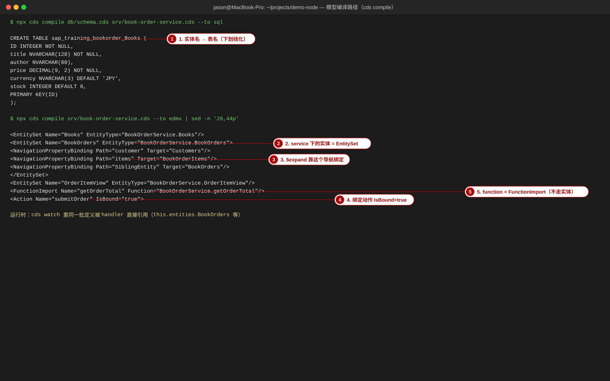
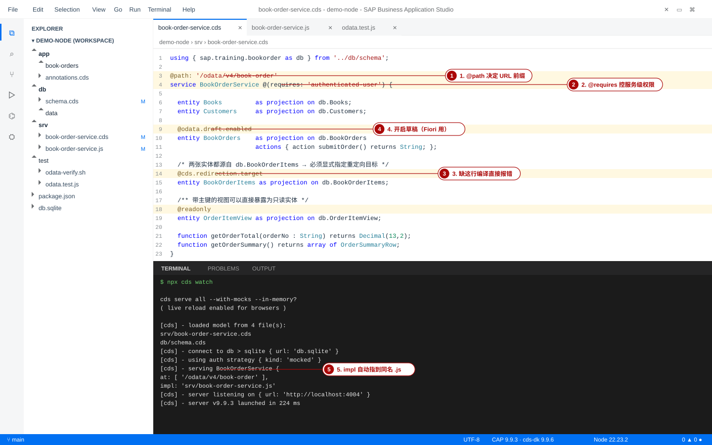
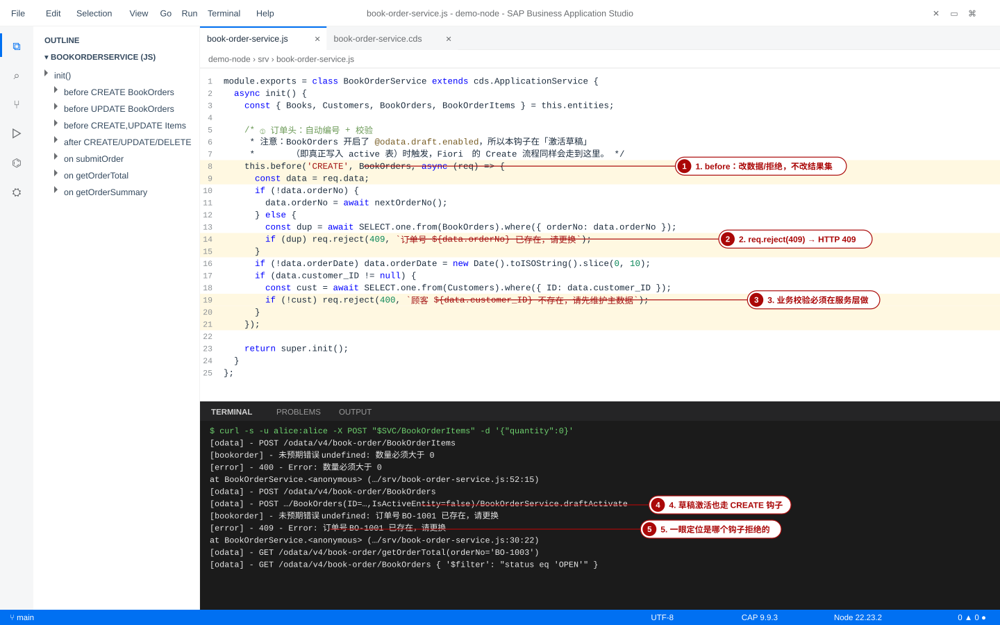
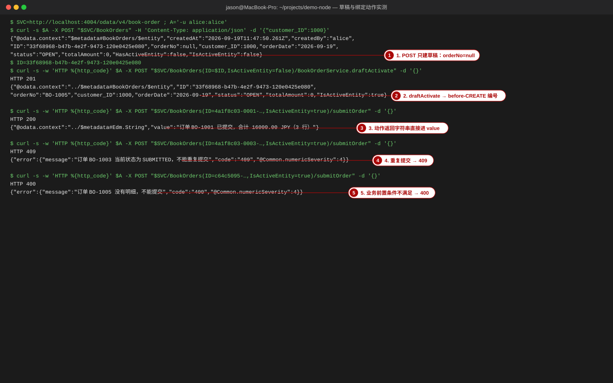
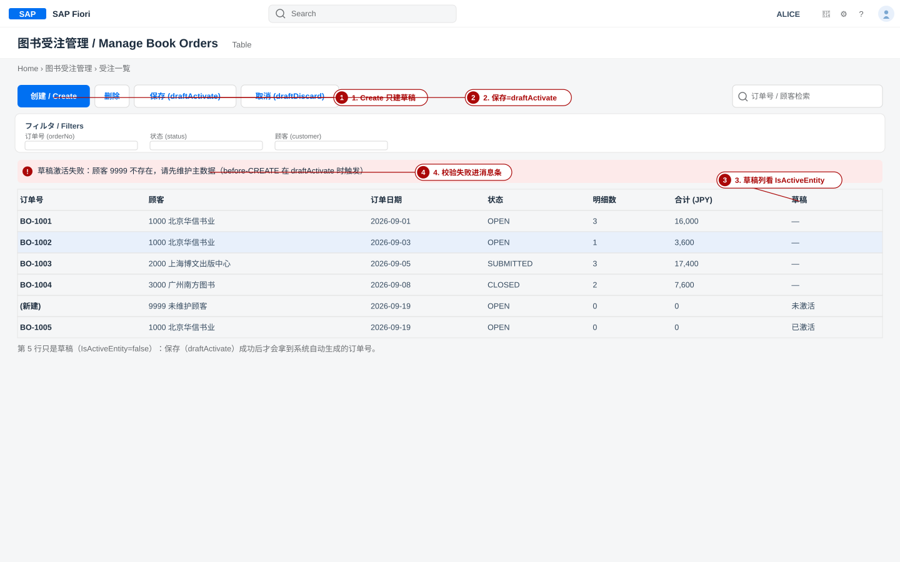
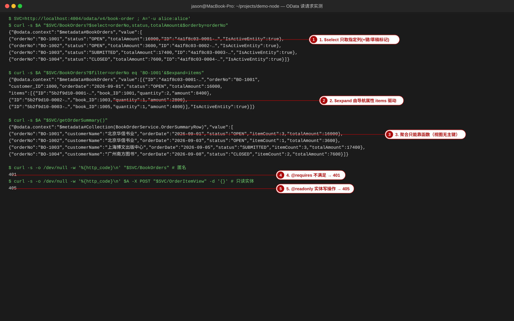

CAP Node.js 服务实现：从服务定义到 OData 落地
覆盖对象：srv/book-order-service.cds（服务定义）· srv/book-order-service.js（事件处理器）· cds compile / cds watch / cds-serve · CQN 查询构建 · 事务与 req.reject · 草稿 @odata.draft.enabled · cds env 与 profiles。本页所有终端输出都来自本站示范项目 project-code/demo-node 的真实运行。
- 读懂一个
service块里的每一个注解（@path/@requires/@readonly/@odata.draft.enabled/@cds.redirection.target），并说清function与entity的取舍； - 用
before/on/after三类钩子写出编号生成、入参校验、派生字段、汇总回写、状态迁移、聚合函数六种逻辑； - 用
cds watch的终端输出证明「哪一条 HTTP 请求触发了哪个 handler」，并用curl复现 200 / 400 / 401 / 404 / 405 / 409 六种响应； - 在 Node.js 里用 CQN 的 fluent API 写 SELECT / INSERT / UPDATE / DELETE，并解释它编译成什么 SQL；
- 把
@odata.draft.enabled的草稿流程（POST → draft → draftActivate）说清，并写出正确的集成测试 URL。
本页命令与输出都在本机实测过，环境：Node 22.23.2、@sap/cds 9.9.3、@sap/cds-dk 9.9.6、@cap-js/sqlite 2.x、数据库 db.sqlite。原始记录保存在 work/evidence/*.txt（01_deploy.txt、04_odata.txt、05_node_server.log、09_watch.log、16_read_and_draft.txt 等），长 JSON 在正文里折行，… 表示省略。凡本页没跑过的内容都会明确标注「未实测/以官方文档为准」；CAP 的小版本会改变日志文案，以你自己终端的输出为准。
0. 本页地图：服务实现要交付什么
上一页（CDS 建模）交付的是数据长什么样；本页交付的是对外能做什么。在 CAP 里这两件事都由 CDS 声明，但「做什么」分成两层：
srv/*.cds → 通用实现
CRUD 自动可用 → 自定义 handler
srv/*.js → OData V4 接口
/odata/v4/book-order
本站示范项目 demo-node 故意做小：4 张表、5 个实体集、1 个绑定动作、2 个无绑定函数、5 类自定义 handler。它是本页所有代码与输出的唯一来源，请先打开文件对照阅读。
| 文件 | 角色 | 本页章节 |
|---|---|---|
db/schema.cds | 领域模型（4 实体 + 1 视图） | §2 对照、§4 关联与外键 |
srv/book-order-service.cds | 服务定义（38 行） | §2 |
srv/book-order-service.js | 事件处理器（151 行） | §3 §4 §6 |
db/data/*.csv | 初始数据（4 文件、21 行） | §10 手顺 |
test/odata-verify.sh | OData 验收脚本（26 条断言） | ⑦ 测试体系 §3 |
在 project-code/demo-node 下执行 npx cds compile srv/book-order-service.cds --to edmx 能输出含 EntitySet Name="BookOrders" 与 FunctionImport Name="getOrderTotal" 的 XML，说明服务定义语法正确、可被 OData 适配器消费。
1. 从模型到 OData 的完整路径
同一批 .cds 文件会被三类消费者读取，产物完全不同。把这条路径记牢，90% 的「为什么服务里看不到我的字段」都有答案。
领域实体 --to sql--> 建表语句
sap_training_bookorder_*
service 定义 --to edmx--> $metadata
EntitySet / Action / Function → OData V4 客户端
Fiori / curl / Postman
运行时 → csn 模型加载
cds.model → handler
this.entities.* → CQN → SQL
@cap-js/sqlite
| 命令 | 产物 | 谁消费 | 典型用途 |
|---|---|---|---|
| cds compile --to sql | CREATE TABLE 语句 | 数据库（deploy 时） | 确认字段类型 / 列名 |
| cds compile --to edmx | EDMX（$metadata） | OData 客户端、Fiori | 确认实体集 / 动作 / 函数是否暴露 |
| cds watch | 运行中的服务 + 热重载 | 开发者、Fiori 预览 | 改代码立刻生效、观察请求 |
cds-serve（npm start） | 运行中的服务（不 watch） | 本地验收 / 集成测试 | 稳定的端口与日志，供脚本打请求 |
1-1 手顺：把「模型 → 两种产物」跑出来
- 动作：在项目根目录编译成 SQL，确认实体到表的映射（这一步先证明「模型自身是通的」，与运行时无关）。
bash
cd project-code/demo-node npx cds compile db/schema.cds srv/book-order-service.cds --to sql - 动作：再编译成 EDMX，看服务层暴露了什么。
bash
npx cds compile srv/book-order-service.cds --to edmx | sed -n '26,44p' - 验证：两条命令的真实输出（本站实测，见
work/evidence/15_compile.txt）。注意实体名 → 表名的变形、EntitySet 与 FunctionImport 的存在。text$ npx cds compile db/schema.cds srv/book-order-service.cds --to sql CREATE TABLE sap_training_bookorder_Books ( ID INTEGER NOT NULL, title NVARCHAR(120) NOT NULL, author NVARCHAR(80), price DECIMAL(9, 2) NOT NULL, currency NVARCHAR(3) DEFAULT 'JPY', stock INTEGER DEFAULT 0, PRIMARY KEY(ID) ); ... $ npx cds compile srv/book-order-service.cds --to edmx | sed -n '26,44p' <EntitySet Name="Books" EntityType="BookOrderService.Books"/> <EntitySet Name="BookOrders" EntityType="BookOrderService.BookOrders"> <NavigationPropertyBinding Path="customer" Target="Customers"/> <NavigationPropertyBinding Path="items" Target="BookOrderItems"/> <NavigationPropertyBinding Path="SiblingEntity" Target="BookOrders"/> </EntitySet> <EntitySet Name="BookOrderItems" EntityType="BookOrderService.BookOrderItems"> <NavigationPropertyBinding Path="order" Target="BookOrders"/> <NavigationPropertyBinding Path="book" Target="Books"/> </EntitySet> <EntitySet Name="OrderItemView" EntityType="BookOrderService.OrderItemView"/> <FunctionImport Name="getOrderTotal" Function="BookOrderService.getOrderTotal"/> <FunctionImport Name="getOrderSummary" Function="BookOrderService.getOrderSummary"/> </EntityContainer>
EntitySet（Books / Customers / BookOrders / BookOrderItems / OrderItemView）+ 2 个 FunctionImport + 1 个 Action Name="submitOrder" IsBound="true"。数不出就是定义写错了。cds compile 里看到 [ERROR] 却仍然生成了文件 —— 编译报错不等于失败退出，脚本里要用 grep -q '\[ERROR\]' && exit 1 才能拦住。详见 §11。
2. 服务定义逐段讲解：srv/book-order-service.cds
下面是本站示范项目服务定义的全文（38 行，与仓库文件逐行对应；为便于阅读，三处 JSDoc 风格的文档注释改写成普通块注释，文件末尾那行注释由原文译为中文）。请对照后面的段落编号读。
cdsusing { sap.training.bookorder as db } from '../db/schema'; @path: '/odata/v4/book-order' service BookOrderService @(requires: 'authenticated-user') { entity Books as projection on db.Books; entity Customers as projection on db.Customers; @odata.draft.enabled entity BookOrders as projection on db.BookOrders actions { action submitOrder() returns String; }; /* 两张实体都源自 db.BookOrderItems → 必须显式指定重定向目标， 否则 CAP 报 “can't auto-redirect BookOrders:items” */ @cds.redirection.target entity BookOrderItems as projection on db.BookOrderItems; /* 带主键的视图可以直接暴露为只读实体（对比服务层函数） */ @readonly entity OrderItemView as projection on db.OrderItemView; /* 单张订单的合计：聚合结果没有主键 → 只能用函数返回 */ function getOrderTotal(orderNo : String) returns Decimal(13,2); /* 订单汇总一览：同上，函数返回结构体数组（结果结构体不需要主键） */ type OrderSummaryRow : { orderNo : String(16); customerName : String(80); orderDate : Date; status : String(10); itemCount : Integer; totalAmount : Decimal(13,2); }; function getOrderSummary() returns array of OrderSummaryRow; } /* Fiori Elements 用的 UI.* 注解放在 app/book-orders/annotations.cds */
把领域模型命名空间 sap.training.bookorder 起别名为 db。服务内只写 db.Books 这样的短名，避免抄长命名空间。别名是任意标识符，db 只是惯例。
不写 @path 时 CAP 按服务名推导 URL（BookOrderService → /odata/v4/book-order，即去掉 Service 后缀并 kebab-case）。显式写死的好处：改了服务名不会悄悄改掉 URL，前端与测试脚本不用跟着改。验证：启动日志里 serving BookOrderService { at: [ '/odata/v4/book-order' ], … } 必须与之一致。
服务级鉴权：调用者必须已认证（把 authenticated-user 换成角色名就是角色校验）。本站用 mocked 认证策略，匿名访问会得到 401 Unauthorized（§10 手顺里有真实输出）。注意 @(requires: 'authenticated-user') 是注解的括号写法，等价于 @requires: 'authenticated-user'，后者在 CDS 里是保留语法的简写形式。
服务实体是领域实体的投影（视图），不是同一张表。这是 CAP 的 facade 模式：可以只暴露部分字段（excluding {…}）、改字段名、加注解。查询最终会被重定向回领域实体与真实表。
开启草稿（Fiori Elements 的 Edit/Create 流程必须它）。代价：这一张实体的写请求多了一层草稿表 BookOrderService_BookOrders_drafts，before-CREATE 只在草案激活（draftActivate）时触发（§7 有真实日志证明）。
写在实体块里的 actions 是绑定动作（bound action）：它属于某一行的实例，URL 里要带主键。返回类型 String 会被放进响应体的 value。绑定动作必须写实现（§4-4），通用 CRUD 不会替你实现。
本节最容易「凭感觉写错」的一行。BookOrders:items 的关联目标是领域实体 db.BookOrderItems，而服务里有两个实体都源自它（BookOrderItems 与 OrderItemView），编译器无法自动判断该重定向到谁，于是直接报错。加上这一行（裸注解等价 : true）即声明「以我为准」。真实报错与修复对照：
bash$ npx cds compile .tmpcheck/base.cds --to edmx # 缺 @cds.redirection.target 的等价模型 [ERROR] base.cds:7:10: Add “@cds.redirection.target” to either “BookOrderService.BookOrderItems” or “BookOrderService.OrderItemView” to select the entity as redirection target for “sap.training.bookorder.BookOrderItems” in this service; can't auto-redirect “BookOrderService.BookOrders:items” otherwise (in entity:“BookOrderService.BookOrderItems”) [ERROR] base.cds:9:10: … (in entity:“BookOrderService.OrderItemView”) $ npx cds compile .tmpcheck/anno.cds --to edmx # 加一行 @cds.redirection.target 之后 <EntitySet Name="BookOrders" EntityType="BookOrderService.BookOrders"> <NavigationPropertyBinding Path="items" Target="BookOrderItems"/> <NavigationPropertyBinding Path="SiblingEntity" Target="BookOrders"/>
官方文档口径：@cds.redirection.target 是布尔注解，true = 优先作为重定向目标，false = 排除该实体（CAP 文档「(Auto-) Redirected Associations」与二月 2021 发布说明）。验证：把注解删掉再编译一次，必须复现上面的 ERROR；加回来 EDMX 里 Path="items" Target="BookOrderItems" 才出现。
只读实体：GET 正常，写请求被运行时拦下，返回 405 与消息 Entity "BookOrderService.OrderItemView" is read-only（ENTITY_IS_READ_ONLY）。它和「服务层函数」是同一问题的两种解法：视图有主键 → 可以直接暴露成实体；聚合视图拿不到主键 → 只能走函数。
无绑定函数（unbound function），HTTP 动词是 GET，参数写在 URL 括号里。验证：curl -u alice:alice "…/getOrderTotal(orderNo='BO-1003')" → {"@odata.context":"$metadata#Edm.Decimal","value":17400}。
函数返回值可以是结构体数组：type 定义形状，不需要主键、不需要建表、也不会出现在 $metadata 的 EntitySet 里（只有 FunctionImport）。这就是「汇总一览」的落地方式。
- 结果能映射到「一行一个主键」→ 用视图 +
@readonly实体（OData 全套 $filter/$orderby/$expand 免费获得）。 - 结果是聚合（GROUP BY）、或跨多表拼装、或需要参数计算 → 用函数。
- 结果是「动作」且要改数据 → 用 action（POST）；只要读 → 用 function（GET）。
- 视图忘了
key：Expected entity to have a primary key，服务起不来。 - 在
resource里给子表用Composition：CSV 初始化不会填父侧外键，$expand返回空数组。本站示范项目故意用普通关联 + 显式外键列（见db/schema.cds注释）。
OrderItemView 可以暴露成实体，而 getOrderSummary() 不行？答案要点：前者有 key ID（OData 实体必须有键），后者的结果集是聚合产物，没有可用的主键。
3. 事件处理器体系与请求生命周期
CAP Node.js 的实现就是一个类：module.exports = class X extends cds.ApplicationService，在 init() 里注册钩子。三类钩子的差别只有一条：能不能改数据、要不要自己实现「真正干活」那一步。
| 钩子 | 何时运行 | 能否改 req.data | 能否改结果集 | 典型用途 |
|---|---|---|---|---|
before | 通用/自定义实现之前 | ✅ | ❌ | 校验、补默认值、派生字段、裁剪客户端不该改的字段 |
on | 代替默认实现 | ✅ | ✅（返回值即结果） | 自定义 action/function；覆写标准 CRUD |
after | 实现完成、结果已算出 | ❌（数据已落库） | ✅ | 汇总回写（再发一次 UPDATE）、脱敏、补算列 |
on('error') | 任何请求抛错后 | — | — | 统一日志、告警；不要在这里吞掉异常 |
| 事件 | 触发来源 | 本站示范项目对应代码 |
|---|---|---|
CREATE | POST /Entity | before('CREATE', BookOrders)、before(['CREATE','UPDATE'], BookOrderItems) |
UPDATE | PATCH /Entity(key) | before('UPDATE', BookOrders)、after('UPDATE', BookOrderItems) |
DELETE | DELETE /Entity(key) | after('DELETE', BookOrderItems)（重算父表合计） |
READ | GET /Entity | 本站未用；练习 §12-2 让你加一个 after('READ', …) |
submitOrder（自定义 action） | POST /Entity(key)/submitOrder | on('submitOrder', BookOrders) |
getOrderTotal / getOrderSummary（自定义 function） | GET /getOrderTotal(orderNo='…') | on('getOrderTotal')、on('getOrderSummary') |
draftActivate 等草稿事件 | POST …(ID=…,IsActiveEntity=false)/BookOrderService.draftActivate | 不需要自己实现；它内部会触发 CREATE/UPDATE（§7） |
3-1 一个写请求的完整生命周期
OData V4 → 协议适配
解析 payload → CQN → 认证 / 鉴权
@requires → before 钩子
校验、派生 → 通用实现
INSERT/UPDATE 落到 db → after 钩子
汇总回写 → 响应
201 + 行数据
几个必须记住的顺序事实（都由本站日志证实）：
- 401 在 before 之前：鉴权失败根本进不了你的 handler，所以「校验不执行」先查
@requires与是否带了-u。 - after 里再发 UPDATE 是合法且常见的（本站的汇总回写就是这么做的），但它不会递归触发同一
after——因为它写的是另一张实体。 - 草稿实体的 CREATE 只在激活时发生：POST 建草稿走的是草稿事件，不到你的
before('CREATE')。 - 一个请求一个事务：before / 通用实现 / after 全在同一个数据库事务里，after 里抛错会让整个请求回滚（§6）。
3-2 手顺：用 cds watch 观察 handler 被调用
- 动作：在项目根目录启动监视模式（自动加载模型 + 浏览器 livereload）。
bash
cd project-code/demo-node npx cds watch - 验证（启动）：真实输出见
work/evidence/09_watch.log；关键是这三行 —— 模型文件清单、服务挂载点、监听地址：textcds serve all --with-mocks --in-memory? ( live reload enabled for browsers ) [cds] - loaded model from 4 file(s): app/book-orders/annotations.cds srv/book-order-service.cds db/schema.cds [cds] - serving BookOrderService { at: [ '/odata/v4/book-order' ], decl: 'srv/book-order-service.cds:4', impl: 'srv/book-order-service.js' } [cds] - server listening on { url: 'http://localhost:4004' } [cds] - server v9.9.3 launched in 224 ms - 动作：另开一个终端，制造一次「被拒绝写」和一次「正常读」，观察 watch 窗口里的请求行与错误行。
bash
SVC=http://localhost:4004/odata/v4/book-order # ① 触发 before-CREATE 的校验（数量必须大于 0） curl -s -u alice:alice -X POST "$SVC/BookOrderItems" -H 'Content-Type: application/json' \ -d '{"order_ID":"x","book_ID":1003,"quantity":0}' # ② 触发无绑定函数 curl -s -u alice:alice "$SVC/getOrderTotal(orderNo='BO-1003')" - 验证（handler 被调用的证据）：watch 终端会多出下面几行（原始记录
03_server.log与09_watch.log）。[odata] 行 = 请求进来了；[error] 行 = 你的 handler 主动拒绝了它；栈里的文件名:行号 = 具体哪个钩子。text[odata] - POST /odata/v4/book-order/BookOrderItems [bookorder] - 未预期错误 undefined: 数量必须大于 0 [error] - 400 - Error: 数量必须大于 0 at BookOrderService.<anonymous
画面 3before-CREATE 钩子的代码与它在终端里的「证据」：每一条 [odata] 请求行后面，紧跟 handler 抛出的业务错误本地实机运行本地实测：cds watch 终端输出（栈内绝对路径已用 … 省略） - 动作（可选，更细的日志）：在自己的钩子里打日志是默认就带命名空间的 —— 本站
on('error')里写的cds.log('bookorder')，输出前缀就是[bookorder]。jsthis.on('error', (err, req) => { if (!err.status) cds.log('bookorder').error(`未预期错误 ${req?.event}: ${err.message}`); }); - 验证（热重载）：保存
srv/book-order-service.js（本站用touch复现），watch 会打印分隔线并重新启动；重启后再打一次请求仍应 200。真实输出：[cds] - server v9.9.3 launched in 191 ms（第二次启动更快）。
console.log 却什么都没看到 —— 检查你注册的实体对象是否来自 this.entities（§4 开头），以及自己有没有把日志写在 init() 之外（模块级代码在服务实例化前就执行了）。4. 五类实现位置（本站示范项目逐段讲）
先把实体对象取出来，全项目统一用它做查询 —— 这是 CAP 的推荐做法，能避免到处写命名空间。
jsmodule.exports = class BookOrderService extends cds.ApplicationService { async init() { const { Books, Customers, BookOrders, BookOrderItems } = this.entities; // … 下面的 ① ～ ⑤ 都注册在 init() 里 return super.init(); } };
下面 5 段是本站 srv/book-order-service.js 的真实代码（151 行里的核心部分），每段都给：代码 → 为什么这么写 → 失败模式 → 验证方法。
4-1 ① 编号生成与校验（before CREATE，订单头）
jsthis.before('CREATE', BookOrders, async (req) => { const data = req.data; if (!data.orderNo) { data.orderNo = await nextOrderNo(); // 客户端没给 → 系统自动编号 } else { const dup = await SELECT.one.from(BookOrders).where({ orderNo: data.orderNo }); if (dup) req.reject(409, `订单号 ${data.orderNo} 已存在，请更换`); // 冲突 → 409 } if (!data.orderDate) data.orderDate = new Date().toISOString().slice(0, 10); if (data.customer_ID != null) { const cust = await SELECT.one.from(Customers).where({ ID: data.customer_ID }); if (!cust) req.reject(400, `顾客 ${data.customer_ID} 不存在，请先维护主数据`); // 入参非法 → 400 } }); // 文件末尾的工具函数：取现有最大订单号 +1 async function nextOrderNo() { const row = await SELECT.one.from('sap.training.bookorder.BookOrders').columns('max(orderNo) as maxNo'); const n = row?.maxNo ? Number(String(row.maxNo).replace(/\D/g, '')) : 1000; return `BO-${n + 1}`; }
- 为什么这么写：编号是业务不变量，必须由服务端产生（客户端给的号只做冲突校验）。校验一律用 4xx：409 表冲突、400 表入参非法，前端能据此给出不同提示。
- 失败模式：
（a）把编号写在after里 → 值已经写库，改不动；
（b）用SELECT.one时忘了await→dup永远是 Promise，冲突永远查不出；
（c）nextOrderNo()用字符串比较max(orderNo)，超过BO-9999后字典序会乱（本项目用replace(/\D/g,'')转数字，仍有 5 位以上的隐患）；
（d）BookOrders开了草稿 → 这段代码在 POST 建草稿时不会执行，只在激活时执行（§7）。 - 验证：
（1）curl -u alice:alice -X POST "$SVC/BookOrders" -d '{"customer_ID":9999}' 建草稿 → 再draftActivate→ 期望 400 与消息顾客 9999 不存在，请先维护主数据；
（2）不传orderNo激活 → 期望 201，返回体里orderNo是系统编号（本站 CSV 初始状态下是BO-1005）；
（3）把-u nosuch:wrong拿掉再试 → 期望 401（说明 401 发生在钩子之前）。
4-2 ② 派生字段计算（before CREATE/UPDATE，明细）
jsthis.before(['CREATE', 'UPDATE'], BookOrderItems, async (req) => { const data = req.data; try { if (data.quantity != null && data.quantity <= 0) { req.reject(400, '数量必须大于 0'); } // 改单行时 payload 可能只带 quantity → 关联字段要从库里取回来 const bookID = data.book_ID ?? (await SELECT.one.from(BookOrderItems).where({ ID: req.data.ID }))?.book_ID; if (bookID == null) req.reject(400, '必须指定图书（book）'); const book = await SELECT.one.from(Books).where({ ID: bookID }); if (!book) req.reject(400, `图书 ${bookID} 不存在`); const qty = data.quantity ?? (await SELECT.one.from(BookOrderItems).where({ ID: data.ID }))?.quantity ?? 0; data.amount = round2(Number(book.price) * Number(qty)); // 服务端算金额，客户端说了不算 } catch (e) { if (e.code === 400 || e.code === 409) throw e; // 已用 req.reject 拒绝，原样抛出 req.reject(500, `计算金额失败：${e.message}`); // 其他异常兜底成 500 } }); const round2 = (n) => Math.round((Number(n) + Number.EPSILON) * 100) / 100;
- 为什么这么写：
amount永远由price × quantity派生，用before覆盖客户端传来的值，杜绝「前端算错导致对不上账」。??与「从库里回查」处理 PATCH 局部更新的场景。 - 失败模式：
（a）只写before('CREATE')→ 改数量时金额不更新（务必同时挂UPDATE）；
（b）直接data.price—— payload 里没有 price，得到undefined，金额变 NaN（真实症状：Cannot read properties of undefined或 amount 为 null）；
（c）req.reject()不写return—— 它内部会 throw，所以后面代码不会继续；但如果你用了req.error()，请求会继续执行，要自己保证后续逻辑安全；
（d）把校验放在after→ 数据已落库，拒绝也白拒。 - 验证：curl … -X POST "$SVC/BookOrderItems" -d '{"order_ID":"<BO-1002 的 ID>","book_ID":1003,"quantity":3}' → 期望
201且amount=8400（2800 × 3，真实输出见下）；再quantity:0→ 400 数量必须大于 0；book_ID:9999→ 400 图书 9999 不存在。
4-3 ③ 汇总回写（after CREATE/UPDATE/DELETE，明细）
jsconst recalc = async (orderID) => { if (!orderID) return; const row = await SELECT.one.from(BookOrderItems) .columns('sum(amount) as total') .where({ order_ID: orderID }); const total = round2(Number(row?.total ?? 0)); await UPDATE(BookOrders).set({ totalAmount: total }).where({ ID: orderID }); }; this.after('CREATE', BookOrderItems, async (_, req) => recalc(req.data.order_ID)); this.after('UPDATE', BookOrderItems, async (_, req) => recalc(req.data.order_ID)); this.after('DELETE', BookOrderItems, async (_, req) => { // 删除后的行不再返回键值，必须从请求里取（CAP 已确认的行为） const orderID = req.data?.order_ID ?? req.params?.[req.params.length - 1]?.order_ID; await recalc(orderID); }); /* 订单头：合计金额由子表汇总，客户端不可直接改 */ this.before('UPDATE', BookOrders, (req) => { delete req.data.totalAmount; });
- 为什么这么写：合计的真相在子表（
sum(amount)），父表的totalAmount只是缓存。用after在写入完成后回算，读写路径最短。before('UPDATE')里删掉客户端提交的totalAmount，防止被「顺手改高一点」。 - 失败模式：
（a）DELETE 的 after 里读req.data.ID→ 已删除的行没有键值，拿不到 → 合计不更新（本项目从req.params兜底取）；
（b）在 after 里直接UPDATE Books而忘了await→ 请求先返回，合计偶发不对；
（c）把recalc写成递归调用同一实体的after→ 死循环（本项目写的是另一张实体，安全）；
（d）忘了 CQN 里order_ID是外键列名（不是order）→ where 条件不生效，sum变成全表合计。 - 验证：写一条明细后立刻读父表（本站真实输出）：
POST 明细 →amount=8400；GETBookOrders?$select=totalAmount&$filter=orderNo eq 'BO-1002'→12000（CSV 原始 3600 + 8400）。
4-4 ④ 绑定动作：状态迁移（on submitOrder）
jsthis.on('submitOrder', BookOrders, async (req) => { const ID = req.params[req.params.length - 1].ID; // 绑定动作：主键在 params 里 const order = await SELECT.one.from(BookOrders).where({ ID }); if (!order) req.reject(404, `订单 ${ID} 不存在`); if (order.status === 'SUBMITTED' || order.status === 'CLOSED') { req.reject(409, `订单 ${order.orderNo} 当前状态为 ${order.status}，不能重复提交`); } const items = await SELECT.from(BookOrderItems).where({ order_ID: ID }); if (items.length === 0) req.reject(400, `订单 ${order.orderNo} 没有明细，不能提交`); if (Number(order.totalAmount) <= 0) req.reject(400, `订单 ${order.orderNo} 合计金额为 0，请检查明细金额`); await UPDATE(BookOrders).set({ status: 'SUBMITTED' }).where({ ID }); return `订单 ${order.orderNo} 已提交，合计 ${Number(order.totalAmount).toFixed(2)} JPY（${items.length} 行）`; });
- 为什么这么写：状态迁移是「动作」，不是「字段更新」—— 用 action 能集中所有前置条件（存在性、当前状态、有无明细、金额非零），并且返回一句人类可读的结果给前端。
- 失败模式：
（a）动作名与基类方法冲突（例如叫read、create、run）→ 覆盖框架方法，服务行为诡异甚至启动失败；
（b）忘了await UPDATE→ 动作返回成功但状态没变；
（c）用after而不是on注册动作 → 通用实现先跑（找不到通用实现会 404/405），你的代码永远不执行；
（d）草稿实体上调用动作时 URL 少了IsActiveEntity=true→ 打到草稿行，行为与预期不同。 - 验证：
（1）空订单提交 → 400订单 BO-1005 没有明细，不能提交；
（2）正常提交 → 200 且返回"订单 BO-1001 已提交，合计 16000.00 JPY（3 行）"；
（3）再提交一次 → 409当前状态为 SUBMITTED，不能重复提交；
（4）用 GET 调这个 URL → 405（action 只能 POST，见 ⑦ 测试体系 §4）。
4-5 ⑤ 无绑定函数：聚合（on getOrderTotal / getOrderSummary）
jsthis.on('getOrderTotal', async (req) => { const { orderNo } = req.data; const order = await SELECT.one.from(BookOrders).where({ orderNo }); if (!order) req.reject(404, `订单号 ${orderNo} 不存在`); const row = await SELECT.one.from(BookOrderItems) .columns('sum(amount) as total') .where({ order_ID: order.ID }); return round2(Number(row?.total ?? 0)); }); this.on('getOrderSummary', async () => { const orders = await SELECT.from(BookOrders) .columns('ID', 'orderNo', 'orderDate', 'status', 'customer.name ascustomerName') .orderBy('orderNo'); const agg = await SELECT.from(BookOrderItems) .columns('order_ID', 'count(ID) as itemCount', 'sum(amount) as totalAmount') .groupBy('order_ID'); const byOrder = new Map(agg.map((a) => [a.order_ID, a])); return orders.map((o) => ({ orderNo: o.orderNo, customerName: o.customerName ?? '', orderDate: o.orderDate, status: o.status, itemCount: Number(byOrder.get(o.ID)?.itemCount ?? 0), totalAmount: round2(Number(byOrder.get(o.ID)?.totalAmount ?? 0)) })); }); 
画面 4草稿流程的真实 HTTP 往返：POST 只产生未激活草稿（orderNo=null）→ draftActivate 返回 201 并自动编号 BO-1005；绑定动作 submitOrder 成功返回业务消息，没有明细 400、重复提交 409（JSON 字段有省略）本地实机运行本地实测：curl（CSV 初始数据状态）
- 为什么这么写：
getOrderSummary有意演示「聚合视图拿不到主键 → 不能当实体」的替代方案：两次查询（订单列表 + 一次 GROUP BY 聚合），在内存里Map拼装。这样把groupBy的成本压在数据库侧，不产生 N+1 查询。 - 失败模式：
（a）把这条 SQL 写成「先查订单，再对每张订单查一次合计」→ N+1，10 万订单会打爆数据库；
（b）漏了customer.name as customerName，返回里没有客户名（关联路径取列要用「关联名.字段 as 别名」）；
（c）返回对象里的字段名与type OrderSummaryRow不一致 → OData 序列化时被静默丢掉；
（d）函数里req.reject之后又return了别的值 → 无关紧要（reject 已 throw），但可读性差。 - 验证：
（1）curl -u alice:alice "$SVC/getOrderTotal(orderNo='BO-1003')" →{"value":17400}；
（2）不存在的订单号 → 404（真实输出里有[error] - 404 - Error: 订单号 BO-9999 不存在）；
（3）getOrderSummary()→ 4 行，BO-1001 的itemCount=3 / totalAmount=16000。
bash test/odata-verify.sh 会把这五类逐条断言，本站真实结果 PASS 26 / FAIL 0（详情见 ⑦ 测试体系 §3）。改完任何一个 handler，先跑它再提交。
5. CQN 查询构建：fluent API ↔ SQL
handler 里所有数据库访问都是 CQN（Core Query Notation）：SELECT / INSERT / UPDATE / DELETE 是全局对象，链式调用只构造查询对象，await 时才执行（默认打到 cds.db）。CAP 文档强调：CQN 不绑定 SQL，同一个查询对象也可以发给远端服务。
jsconst { Books, BookOrders, BookOrderItems } = this.entities; // SELECT：列 / 过滤 / 排序 / 分页 await SELECT.from(Books).columns('ID', 'title', 'price') .where({ price: { '>': 3000 } }).orderBy('title desc').limit(10); await SELECT.one.from(BookOrders).where({ orderNo: 'BO-1001' }); // 只取一行 await SELECT.from(BookOrderItems).columns('book.title as bookTitle'); // 关联路径取列 // 聚合 + group by（注意 as 别名就是返回对象里的字段名） await SELECT.from(BookOrderItems) .columns('order_ID', 'count(ID) as itemCount', 'sum(amount) as totalAmount') .groupBy('order_ID'); // INSERT / UPDATE / DELETE await INSERT.into(BookOrderItems).entries({ order_ID: id, book_ID: 1003, quantity: 2, amount: 5600 }); await UPDATE(BookOrders).set({ totalAmount: 12000 }).where({ orderNo: 'BO-1002' }); await DELETE.from(BookOrderItems).where({ order_ID: 'x' }); // 需要更复杂的条件时用标签模板（TTL），值会被参数化，不必自己拼字符串 await SELECT.from(Books).where`price > ${3000} and currency = ${'JPY'}`;
下面是本站实测的「同一查询 → CQN 对象 → 生成的 SQL」对照（脚本见 work/evidence/14_cqn.txt，用 db.cqn2sql() 打印）。重点看外键列的命名与参数化。
| fluent API 写法 | 生成的 SQL（SQLite 方言） |
|---|---|
SELECT.from(Books).columns('ID','title','price').where({price:{'>':3000}}).orderBy('title desc').limit(2) |
SELECT "$B".ID,"$B".title as title,"$B".price FROM sap_training_bookorder_Books as "$B" WHERE "$B".price > ? ORDER BY title DESC LIMIT ? |
SELECT.from(BookOrderItems).columns('order_ID','count(ID) as itemCount','sum(amount) as total').groupBy('order_ID') |
SELECT "$B".order_ID,count("$B".ID) as itemCount,sum("$B".amount) as total FROM sap_training_bookorder_BookOrderItems as "$B" GROUP BY "$B".order_ID |
SELECT.one.from(BookOrderItems).columns('book.title as bookTitle','book.price as unitPrice') |
SELECT book.title as bookTitle,book.price as unitPrice FROM sap_training_bookorder_BookOrderItems as "$B" left JOIN sap_training_bookorder_Books as book ON book.ID = "$B".book_ID LIMIT ? |
UPDATE(BookOrders).set({totalAmount:12000, status:'OPEN'}).where({orderNo:'BO-1002'}) |
UPDATE sap_training_bookorder_BookOrders AS "$B" SET totalAmount=?,status=?,modifiedAt=session_context('$now'),modifiedBy=session_context('$user.id') WHERE "$B".orderNo = ? |
DELETE.from(BookOrderItems).where({order_ID:'x'}) |
DELETE FROM sap_training_bookorder_BookOrderItems AS "$B" WHERE "$B".order_ID = ? |
text--- INSERT CQN: {"INSERT":{"into":{"ref":["sap.training.bookorder.BookOrderItems"]},"entries":[{"ID":"11111111-…","order_ID":"x","book_ID":1003,"quantity":2,"amount":5600}]}} SQL: INSERT INTO sap_training_bookorder_BookOrderItems (createdAt,createdBy,modifiedAt,modifiedBy,ID,…) SELECT (CASE WHEN json_type(value,'$."createdAt"') IS NULL THEN ISO(session_context('$now')) ELSE … END), … FROM json_each(?)
- 实体名 → 表名：
sap.training.bookorder.Books→sap_training_bookorder_Books（点变下划线），SQL 里出现的就是它。 - 外键列 = 关联名 +
_ID：order_ID/book_ID/customer_ID。这是最常见的错写法来源。 - 关联取列会变成 LEFT JOIN，别名就是关联名（
book.title）。 - 全部参数化：值用
?占位（values=[…]），所以 fluent API 天然不怕注入。
UPDATE(…).set(…)与UPDATE(…).with(…)不同：set是「赋值」，with支持+=这类表达式（本站用set）。SELECT.one在结果多于 1 行时行为不可依赖 —— 用SELECT.one时 where 必须唯一。- 聚合结果里的
sum在 SQLite/Node 驱动下可能是string或null，所以本站到处是Number(row?.total ?? 0)。
ORDER BY … DESC LIMIT ? 与参数化）。6. 事务与错误处理
CAP 的核心承诺是「事件处理器里你已经在事务中」：一个请求 = 一个根事务，before / 通用实现 / after 里的所有查询共享它，成功一起提交，抛错一起回滚。所以本站代码里没有一处 cds.tx()，这是刻意的（见页面下方「示范项目避免了什么坑」）。
6-1 req.reject()：把业务错误变成正确的 HTTP 状态
| 写法 | 效果 | 本站用例 |
|---|---|---|
req.reject(400, '数量必须大于 0') | HTTP 400 + 消息 | 明细入参非法 |
req.reject(404, `订单号 X 不存在`) | HTTP 404 | 函数查不到订单 |
req.reject(409, `订单号 X 已存在`) | HTTP 409（冲突） | 重复编号 / 重复提交 |
| 不 catch 的异常 | HTTP 500 | 真正的 bug（例如读 undefined 的属性） |
req.error(400, '…') | 记录错误但不中断，可用于一次收集多条校验 | 本站未用（示范项目只要一条消息） |
真实的错误响应长这样（code 来自你传的状态码，@Common.numericSeverity 供 Fiori 展示级别）：
json{"error":{"message":"订单 BO-1005 没有明细，不能提交","code":"400","@Common.numericSeverity":4}} {"error":{"message":"订单 BO-1003 当前状态为 SUBMITTED，不能重复提交","code":"409","@Common.numericSeverity":4}}
try/catch（而且只 catch 一处）
规范做法是：能自己判断的错误用 req.reject，无法预料的异常留给框架 500。本站只有「派生字段计算」一处包了 try/catch，因为里面有三次数据库查询与数值运算，任何一环坏掉都应该给出可读的上下文（计算金额失败：…），而不是让前端看到裸的 500。同时它把已经 req.reject 过的 4xx 原样抛出，避免「400 被重新包成 500」这种典型 bug。官方文档还提到：生产环境里 5xx 的响应体会被脱敏（只回 500 Internal Server Error），只有显式设置 err.$sanitize = false 才会带出细节 —— 所以排查 500 必须看服务端日志，别指望客户端。
6-2 请求事务与 cds.tx()：示范项目避免了什么坑
- 避免了「自己开事务导致 SQLite 死锁」：官方文档明确警告，SQLite 下多个事务互相等待会死锁（并行事务不被允许）。在 handler 里再套
cds.tx()属于典型误用 —— 请求本来就有事务。 - 避免了「after 里改了数据但没回滚」：本站
recalc()写在await的链上，异常会冒泡到框架，整个请求（含主插入）一起回滚，不会留下「明细写了、合计没算」的中间态。 - 避免了「把 Promise 忘了 await」：所有 CQN 调用都
await。漏 await 的后果在 200 响应里看不出来，但测试会偶发失败 —— 这类问题只能靠 ⑦ 测试体系 的重复运行暴露。 - 避免了自己管连接：业务代码从不出现
BEGIN/COMMIT、也没有连接池参数，全部交给 CAP（db.pool.max = 1是 sqlite 的默认设定，见 §9 的cds env输出）。
cds.tx() / cds.spawn()
两种场景：① 你在非请求上下文（启动脚本、定时任务）里连续做多次写操作，需要它们原子化 —— 用 cds.tx(async () => { … })；② 你要在当前事务之外异步跑后台任务（发邮件、写外部系统）—— 用 cds.spawn()。在任何 handler 内部，通常都不需要这两者。两处 API 的语义以 CAP 文档「Transaction Management」为准。
test/odata-verify.sh 的汇总断言兜底。）7. 草稿（@odata.draft.enabled）：流程与测试影响
给一张实体加 @odata.draft.enabled，CRUD 的语义就变了：客户端先产生一份草稿（draft），反复修改，最后「激活」写成正式行。Fiori Elements 的 Create / Edit 流程依赖它（保存按钮 = draftActivate，取消 = 丢弃草稿）。
/BookOrders（body 可以只带必填字段）
响应里 IsActiveEntity=false，orderNo=null：这时还没有正式订单，你的 before('CREATE') 也没跑（真实输出见 §7-1）。
/BookOrders(ID=…,IsActiveEntity=false)
草稿行存在 BookOrderService_BookOrders_drafts 表；db/schema.cds 里的 managed 字段（createdBy/modifiedBy）由框架维护。
/BookOrders(ID=…,IsActiveEntity=false)/BookOrderService.draftActivate → 201
此刻才真正写入正式表，并触发 CREATE 事件 —— 本站的自动编号与顾客校验都在这一刻发生。注意 URL 里的动作名是带服务名前缀的：BookOrderService.draftActivate。
/BookOrders(ID=…,IsActiveEntity=false) → 204
真正删除发生在激活时（本站实测草稿建号但没激活的订单一直停在草稿表里，重新 deploy 才清掉）。
7-1 手顺：亲手走一遍草稿流程（含真实输出）
- 动作：先确保服务在跑且数据是初始状态（草稿会改数据，这一步很重要）。
bash
cd project-code/demo-node npm run deploy && (npm start &) && sleep 8 SVC=http://localhost:4004/odata/v4/book-order ; A='-u alice:alice' - 动作：建草稿（只带顾客），然后激活。
bash
D=$(curl -s $A -X POST "$SVC/BookOrders" -H 'Content-Type: application/json' -d '{"customer_ID":1000}') ID=$(echo "$D" | python3 -c 'import sys,json;print(json.load(sys.stdin)["ID"])') curl -s -w 'HTTP %{http_code}\n' $A -X POST \ "$SVC/BookOrders(ID=$ID,IsActiveEntity=false)/BookOrderService.draftActivate" \ -H 'Content-Type: application/json' -d '{}' - 验证：本站实测输出（
work/evidence/16_read_and_draft.txt）—— 草稿阶段orderNo为null，激活后变成系统编号BO-1005：text{"@odata.context":"$metadata#BookOrders/$entity","createdAt":"2026-09-19T11:47:50.261Z","createdBy":"alice", "ID":"33f68968-b47b-4e2f-9473-120e0425e080","orderNo":null,"customer_ID":1000,"orderDate":"2026-09-19", "status":"OPEN","totalAmount":0,"HasActiveEntity":false,"IsActiveEntity":false} HTTP 201 {"@odata.context":"../$metadata#BookOrders/$entity","ID":"33f68968-b47b-4e2f-9473-120e0425e080", "orderNo":"BO-1005","customer_ID":1000,"orderDate":"2026-09-19","status":"OPEN","totalAmount":0,"IsActiveEntity":true} - 验证（关键：钩子在激活时触发）：草稿激活走的是同一套
before('CREATE')，所以「顾客不存在」会在激活时才被拒绝。本站脚本对此的断言：顾客不存在激活 → 400、重复订单号激活 → 409。日志里的证据：text[odata] - POST /odata/v4/book-order/BookOrders(ID=25349791-…,IsActiveEntity=false)/BookOrderService.draftActivate [bookorder] - 未预期错误 undefined: 顾客 9999 不存在，请先维护主数据 [error] - 400 - Error: 顾客 9999 不存在，请先维护主数据 at BookOrderService.<anonymous> (…/srv/book-order-service.js:38:24) at async BookOrderService.draftHandle [as handle] (…/@sap/cds/libx/_runtime/fiori/lean-draft.js:1020:20) { - 验证（丢弃）：curl -u alice:alice -X DELETE "$SVC/BookOrders(ID=$ID,IsActiveEntity=false)" → 204。
- URL 形态变了：所有对草稿行的请求必须带
IsActiveEntity；绑定动作要写/BookOrders(ID=…,IsActiveEntity=true)/submitOrder，少了它可能打到草稿行（行为不同）。激活动作的完整形态是/BookOrders(ID=…,IsActiveEntity=false)/BookOrderService.draftActivate。 - 断言的层级多了一层：
POST的响应码是 201 但IsActiveEntity=false；真正建单要看draftActivate的结果（也是 201）。把两者搞混的典型症状：测试断言「POST 后订单号是 BO-1005」永远失败。 - 数据不幂等：每次激活都会新增一行；重复跑测试必须先
npm run deploy（或测试里data.reset()），否则「自动编号 = BO-1005」这类断言第二次就挂。
8. 本地运行与热重载
项目里的两条启动路径差一个功能，别混用：
npm start（= cds-serve） | npx cds watch | |
|---|---|---|
| 用途 | 本地验收、集成测试、演示 | 日常开发 |
| 改动文件后 | 需手动重启 | 自动重启（热重载） |
| 额外功能 | 无 | 浏览器 livereload、--open、--profile |
| 真实启动日志（本站） | 04_odata.txt 同一次会话的 03_server.log | 09_watch.log |
8-1 两条路径的真实输出对照
text# npm start（cds-serve）—— 稳定、无监视 > demo-node@1.0.0 start > cds-serve [cds] - loaded model from 3 file(s): srv/book-order-service.cds db/schema.cds node_modules/@sap/cds/common.cds [cds] - connect to db > sqlite { url: 'db.sqlite' } [cds] - using auth strategy { kind: 'mocked' } [cds] - serving BookOrderService { at: [ '/odata/v4/book-order' ], decl: 'srv/book-order-service.cds:4', impl: 'srv/book-order-service.js' } [cds] - server listening on { url: 'http://localhost:4004' } [cds] - server v9.9.3 launched in 222 ms ← 第一次；热重载后第二次是 191 ms
text# npx cds watch —— 监视 + livereload cds serve all --with-mocks --in-memory? ( live reload enabled for browsers ) [cds] - loaded model from 4 file(s): app/book-orders/annotations.cds srv/book-order-service.cds db/schema.cds [cds] - using bindings from: { registry: '~/.cds-services.json' } [cds] - serving BookOrderService { at: [ '/odata/v4/book-order' ], impl: 'srv/book-order-service.js' } [cds] - server listening on { url: 'http://localhost:4004' } [cds] - server v9.9.3 launched in 224 ms # —— 这里 touch srv/book-order-service.js（模拟保存文件）—— [cds] - loaded model from 4 file(s): ← 自动重启：模型重新加载 … (省略同一批启动行) [cds] - server v9.9.3 launched in 191 ms
因为期间项目新增了 app/book-orders/annotations.cds —— Fiori 的 UI 注解文件也是 CDS 模型的一部分，会被一起编译。同一个项目的 npm start 与 cds watch 加载的是同一份模型清单，差别只在「是否监视文件变化」。所以：永远以启动日志里列出的文件清单为准，不要凭记忆判断「这个字段到底有没有进模型」。
[cds] - loaded model from … 与 server listening，且随后 curl -u alice:alice "$SVC/$metadata" 仍返回 200。package.json 的依赖或 .cdsrc 配置却不生效 —— 这两类变更通常不会重启服务，切到前台按 Ctrl+C 再启动一次；改了 db/schema.cds 的字段类型后列不一致，需要 npm run deploy 重建表。9. 环境变量与 profiles：让同一份代码跑在三种地方
cds env 是「配置的照妖镜」：它把内置默认值、package.json 的 cds 段、.cdsrc*.json、环境变量、服务绑定（service bindings）合并后的最终有效配置打印出来。本站的真实输出：
bashnpx cds env get requires.db # 数据库配置（注意 impl / credentials / data 目录 / pool.max） npx cds env get requires.auth # 认证策略与 mock 用户 npx cds env --profile production | head -20 # 生产 profile 下的有效配置
text$ npx cds env get requires.db { "impl": "@cap-js/sqlite", "credentials": { "url": "db.sqlite" }, "data": [ "db/data", "db/csv", "test/data" ], "pool": { "max": 1 }, "kind": "sqlite" } $ npx cds env get requires.auth # 只截取关键部分 { "restrict_all_services": false, "kind": "mocked", "users": { "alice": { "tenant": "t1", "roles": [ "admin" ] }, "bob": { "tenant": "t1", "roles": [ "cds.ExtensionDeveloper" ] }, …, "*": true ← 关键：mock 认证放行其他任意用户名 }, "tenants": { "t1": { "features": [ "isbn" ] }, "t2": { "features": "*" } } } $ npx cds env --profile production | head -6 { "_context": "cds", "_home": "/…/project-code/demo-node", "_sources": [ "…/node_modules/@sap/cds/lib/env/defaults.js", "…/node_modules/@sap/cds-fiori/package.json", "…/project-code/demo-node/package.json", "process.env" ], "_profiles": { "_defined": {} }, "production": true, ← 生效的 profile 会体现在这里
这一段正好解释了两个此前见过的「怪现象」：为什么 -u nosuch:wrong 也能返回 200（cds env get requires.auth 里预定义用户之外还有 "*": true 兜底 —— mocked 是开发期策略，官方文档明确「不适合生产」），以及为什么本地库是 sqlite 而云端是 hana 却不用改代码（同一个 requires.db 配置项被不同的绑定来源覆盖）。要限制 mock 登录，必须显式覆盖 "*": false，或改用 basic / jwt。
json"cds": { "requires": { "db": { "kind": "sqlite", "credentials": { "url": "db.sqlite" } }, "auth": { "kind": "mocked" } } }
它的作用是「本地跑得起来」：sqlite 落盘文件、认证用 mock。上云时这两个值都会被服务绑定（CF 的 VCAP_SERVICES 或 cds bind）覆盖 —— 代码一行都不用改。
development（默认）：本地 sqlite + mocked 认证，cds watch/npm start都是它；production：cds build --production与云端部署用；cds env --profile production可本地核对生效值（CAP 文档建议在gen/srv里执行来验证部署产物）；hybrid：本地连云端服务（HANA / XSUAA 等），由 cds bind db --to <实例名> 写入.cdsrc-private.json的[hybrid]段，再用 cds watch --profile hybrid 启动（命令帮助里原文：--profile <profile,...> Specify from which profile(s) the binding information is taken. Example: cds w --profile hybrid,production）。
配置写法（CAP 文档口径）是把环境相关项包进 profile 名："[production]": { "kind": "hana" }；用户私有配置（含凭据）放 .cdsrc-private.json，不要提交到仓库。
cds env get requires.db 是 sqlite，而云端是 hana？② 想临时把日志级别调高，你会在哪里改、用什么命令验证生效？10. 手顺：把示范项目在本地跑起来（每步都给期望输出）
- 动作（Node 版本）：用 LTS 版本的 Node（本站实测 v22.23.2）。
@cap-js/sqlite背后是原生模块better-sqlite3（本站安装到的版本 12.11.1），它与 Node 的 ABI 绑定 —— 版本不对会报NODE_MODULE_VERSION不匹配。bashnode -v # 期望 v22.x（本站实测 v22.23.2） npx cds --version | head -3 # 期望 @sap/cds 9.9.3 / @sap/cds-dk 9.9.6 - 动作（装依赖）：
bash
cd project-code/demo-node npm install - 验证（装完）：
node_modules/@sap/cds/package.json存在，且npx cds --version能打印版本表（含@sap/cds-compiler）。 - 动作（建库 + 灌初始数据）：
bash
npm run deploy # = cds deploy --to sqlite:db.sqlite - 验证（deploy）：真实输出（
work/evidence/01_deploy.txt）—— 4 个 CSV 被加载，最后一行是成功标志：text> demo-node@1.0.0 deploy > cds deploy --to sqlite:db.sqlite > init from db/data/sap.training.bookorder-Customers.csv > init from db/data/sap.training.bookorder-Books.csv > init from db/data/sap.training.bookorder-BookOrders.csv > init from db/data/sap.training.bookorder-BookOrderItems.csv /> successfully deployed to db.sqlite - 验证（表与行数）：python3 ../../work/sqlite_tables.py 的真实输出（
02_tables.txt）—— 注意多出来的草稿表与 outbox 表，这是 CAP 自己建的：textTABLES: ['BookOrderService_BookOrders_drafts', 'DRAFT_DraftAdministrativeData', 'cds_outbox_Messages', 'sap_training_bookorder_BookOrderItems', 'sap_training_bookorder_BookOrders', 'sap_training_bookorder_Books', 'sap_training_bookorder_Customers'] BookOrderService_BookOrders_drafts 0 rows DRAFT_DraftAdministrativeData 0 rows cds_outbox_Messages 0 rows sap_training_bookorder_BookOrderItems 9 rows sap_training_bookorder_BookOrders 4 rows sap_training_bookorder_Books 5 rows sap_training_bookorder_Customers 3 rows - 动作（起服务）：后台启动并在另一个终端验证（前台启动会占住终端，脚本里用
&）。bash(npm start > /tmp/demo.log 2>&1 &) sleep 8 curl -s -o /dev/null -w 'metadata=%{http_code}\n' -u alice:alice \ 'http://localhost:4004/odata/v4/book-order/$metadata' - 验证（服务起来）：期望
metadata=200；日志里能看到server listening on { url: 'http://localhost:4004' }与serving BookOrderService。 - 动作（读写各一次，确认业务逻辑生效）：
bash
SVC=http://localhost:4004/odata/v4/book-order ; A='-u alice:alice' curl -s $A "$SVC/getOrderSummary()" # 汇总函数 curl -s $A "$SVC/getOrderTotal(orderNo='BO-1003')" # 单张合计 curl -s -o /dev/null -w '%{http_code}\n' "$SVC/BookOrders" # 匿名 → 401 - 验证（读）：真实输出（
16_read_and_draft.txt）—— 4 张订单、汇总与 CSV 对得上、匿名 401：text$ curl -s $A "$SVC/getOrderSummary()" {"@odata.context":"$metadata#Collection(BookOrderService.OrderSummaryRow)","value":[ {"orderNo":"BO-1001","customerName":"北京华信书业","orderDate":"2026-09-01","status":"OPEN","itemCount":3,"totalAmount":16000}, {"orderNo":"BO-1002","customerName":"北京华信书业","orderDate":"2026-09-03","status":"OPEN","itemCount":1,"totalAmount":3600}, {"orderNo":"BO-1003","customerName":"上海博文出版中心","orderDate":"2026
画面 5node_s05高保真重绘本站自绘（figkit 高保真画面） - 动作（跑一遍完整验收）：
bash
bash test/odata-verify.sh | tee ../../work/evidence/04_odata.txt | tail -3 - 验证（全绿）：最后一行是
PASS 26 / FAIL 0（本站真实输出）。注意：这个脚本会写数据（新增明细、激活草稿、提交订单），所以重跑前必须 npm run deploy。 - 动作（收工）：停掉服务，让出 4004 端口（否则下一个项目/下一个实验会撞端口）。
bash
pkill -f cds-serve ; pgrep -fl cds-serve || echo "server stopped"
- 端口占用：
Error: listen EADDRINUSE :::4004→ pkill -f cds-serve，或用 cds watch --port 4005。 - 忘了
-u alice:alice：所有请求 401（不是服务坏了）。 db.sqlite被测试改脏：断言「2 张 OPEN 订单」失败 → 先 npm run deploy。
11. 常见错误表（症状 → 原因 → 处理 → 验证）
| # | 症状 | 根因 | 处理 | 验证 |
|---|---|---|---|---|
| 1 | handler 完全不触发（日志里没有你的前缀） | 注册在错误的实体对象上（用了 db.Xxx 而不是 this.entities.Xxx），或写在了 init() 之外 | 统一用 this.entities，全部注册进 async init() | watch 里发一次请求，看到自己 cds.log 的前缀 |
| 2 | $expand=items 返回 [] | 用了 Composition 但 CSV 初始化没填父侧外键列；或关联 on 条件写错 | 改普通关联 + 显式填 order_ID（本站做法），或改用 managed composition | curl "$SVC/BookOrders?\$filter=orderNo eq 'BO-1001'&\$expand=items" → 3 行 |
| 3 | 查询返回空 / 条件不生效 | 外键列名写错：写成 order 而不是 order_ID（book→book_ID、customer→customer_ID） | 用 db.cqn2sql() 打印真实 SQL 核对列名 | SQL 里出现 WHERE "$B".order_ID = ? |
| 4 | Cannot read properties of undefined (reading 'X') → 500 | 在 before 里读了 payload 里不存在的字段（例如 req.data.book.price），或 req.params[0] 取错位置 | 关联字段先 SELECT 回查；绑定动作用 req.params[req.params.length - 1].ID | 同类请求返回 4xx（业务消息）而不是 500 |
| 5 | 业务错误返回 500 而不是 400 | 用了 throw new Error('…')，而不是 req.reject(400, '…') | 一律 req.reject(status, message)；5xx 会脱敏，客户端看不到原因 | 响应体 error.code = "400" |
| 6 | 动作/函数注册后行为怪异，甚至服务起不来 | 动作名与基类方法冲突（read / create / update / delete / run / init） | 改业务化的名字（本站 submitOrder） | 启动日志不再有覆盖警告，动作按预期返回 |
| 7 | POST 建单后校验没执行、订单号是空 | 实体开了 @odata.draft.enabled：POST 只建草稿，before('CREATE') 要等激活 | 调 …/BookOrderService.draftActivate；测试里断言激活结果 | 激活返回 201 且 orderNo=BO-1005；日志出现 draftActivate |
| 8 | no such table: sap_training_bookorder_XXX | 改了 db/schema.cds 没重新 deploy，或 deploy 到了别的 sqlite 文件 | npm run deploy，并核对 cds env get requires.db 里的 credentials.url | sqlite_tables.py 里出现新表名 |
| 9 | 字段长度/格式校验「只在客户端生效」，绕过前端就写进去了 | @mandatory、@assert.range、@assert.format、字段类型长度是 CDS 层声明，OData 会校验；但自定义规则（如「数量必须 > 0」）你不写就没人管 | 能在模型声明的用注解；业务规则写 before 校验 | 用 curl 直接 P
 |
| 10 | Expected entity to have a primary key | 把没有 key 的视图（尤其聚合视图）当作服务实体暴露 | 有主键的视图才暴露成实体；聚合改成无绑定函数 | cds compile --to edmx 无 ERROR，$metadata 里有该 EntitySet |
| 11 | add "@cds.redirection.target" … can't auto-redirect | 同一领域实体在服务里被投影成两个实体，关联无法自动重定向 | 给「应当作为目标」的那个加 @cds.redirection.target | 编译无 ERROR，EDMX 里出现 Path="items" Target="BookOrderItems" |
| 12 | 写请求 405：Entity … is read-only | 实体标了 @readonly | 要么去掉只读，要么把写入逻辑做成 action | POST 返回 405 且消息含 is read-only |
| 13 | 匿名请求 401，但带 -u 也 401 | mock 认证下用户名/口令均可，问题多半是 URL 拼错（少了 /odata/v4/book-order）或端口不对 | 先 curl -sv 看真实 URL 与响应头 | $metadata 返回 200 |
| 14 | 函数返回 405，或动作返回 405 | 方法用错：function 只能 GET、action 只能 POST | function 用 curl GET + URL 括号参数；action 用 -X POST -d '{}' | 两种误用都是 405（本站实测） |
| 15 | 本地 200、云端 500（或反之） | 本地 sqlite / 云端 HANA 的方言差异（日期、聚合返回类型），或云端缺服务绑定 | 用 cds env --profile production 核对配置；云端看 cf logs | 同一 curl 在两边都 200 且数值一致 |
| 16 | 草稿行越积越多、订单列表出现奇怪的行 | 草稿未激活也未丢弃（默认 30 天超时清理），或测试反复建草稿 | 测试前 data.reset() / npm run deploy；必要时 cds.fiori.draft_deletion_timeout 调整 | 草稿表行数回到 0 |
12. 练习（3 个）与完成基准
练习 1：给订单头加一条 before-CREATE 校验（必做）
- 要求：订单的
note字段禁止出现「测试」二字，出现则 400，消息为备注中不允许出现「测试」。 - 提示：在已有的
before('CREATE', BookOrders, …)里追加判断即可；注意草稿实体上的这一钩子在激活时执行，所以你的 curl 要打draftActivate。 - 验证：建草稿时带
note:'测试订单'→ 激活 → 期望 400 且消息一致；不带 note 激活 → 期望 201。
练习 2：加一个 after-READ 的计算字段（必做）
- 要求：读
BookOrders时，给每一行附加itemCount（明细行数）。不改模型时可以先只改返回值看效果，再决定是否加字段定义。 - 提示：
after('READ', BookOrders, (rows, req) => …)，rows在单行读时可能是对象、列表读时是数组，要兼容两者；用一次groupBy聚合拿到每个订单的行数，避免在循环里查询。 - 验证：curl -u alice:alice "$SVC/BookOrders?\$filter=orderNo eq 'BO-1001'" 的返回里出现
itemCount: 3（与getOrderSummary()的数字一致）。注意：如果字段没有在模型里声明，OData 序列化会丢掉它 —— 这正是要你观察的现象，请记录你选择的做法。
练习 3：把某个 on 改成 after，说明差异（必做）
- 要求：把
on('submitOrder', …)改成after('submitOrder', …)，观察并解释发生了什么。 - 提示：
on是「代替默认实现」，after是「默认实现之后」。自定义动作没有默认实现，所以after注册的动作不会被调用（请求会同 404/405 级别的错误失败）。 - 验证：改完重启后调用 …/BookOrders(ID=…,IsActiveEntity=true)/submitOrder，记录真实响应码与日志；然后改回
on并确认恢复 200。把你的观察写成一句话结论（这份结论就是练习的交付物）。
完成基准（自检清单）
- 三个练习都能在本地跑通，且每一个都有
curl证据（响应码 + 关键字段）。 - 练习 3 能用一句话说清
on与after在「自定义动作」上的差别，并给出真实日志作为依据。 - bash test/odata-verify.sh 仍是 PASS 26 / FAIL 0（你的改动没有破坏既有行为）。
- 改动后执行过 npx cds compile srv/book-order-service.cds --to edmx，输出里没有
[ERROR]。
13. 本节测试
@path: '/odata/v4/book-order'不写会怎样？为什么仍然建议显式写？- 为什么
BookOrderItems那行必须加@cds.redirection.target？不加时编译器的报错关键词是什么？ - 同一个「汇总」需求，什么时候用
@readonly实体、什么时候用function？判断标准是什么？ - 订单开了草稿之后，
before('CREATE')里的校验会在哪个请求上执行？请写出完整 URL 形态。 after('DELETE', BookOrderItems)里为什么不能取req.data.ID？替代方案是什么？- 业务校验失败应该返回 400 还是 500？各自在客户端看到什么（结合 5xx 脱敏）？
- 写出「查 status=OPEN 的订单、只要 ID/orderNo、按 orderNo 倒序、取前 3 条」的 CQN fluent API。
对应自测题见自测页「CAP Node.js 服务实现」（题库文件 work/quiz/node.json，共 19 题）。
14. 小结与下一页
一句话总结
服务定义（.cds）决定对外能做什么，事件处理器（.js）决定怎么做：校验与派生放 before、状态迁移与聚合放 on、汇总回写放 after；错误一律用 req.reject(4xx)；草稿把「建单」拆成了「建草稿 + 激活」两步。
本站示范项目的 5 类实现
① 编号生成与校验（before CREATE）② 派生字段（before CREATE/UPDATE）③ 汇总回写（after，含 DELETE 兜底）④ 绑定动作状态迁移（on submitOrder）⑤ 无绑定函数聚合（on getOrderTotal / getOrderSummary）。
下一步
服务已经能用 curl 证明是对的 —— 但「能跑」不等于「不会坏」。下一页把这件事工程化：模型编译检查、mocha + cds.test、26 条断言的验收脚本，以及放进 CI。
⑦ 测试体系：从一条 curl 到 CI →
与 Java 版对照（java.html）
同一份 CDS 模型可以换运行时：Java 侧没有 this.before(…) 这种注册式写法，而是用 @Component + @ServiceName 的 EventHandler 类 + @Before / @On / @After 注解方法，查询用 CQL（Select.from(...)）而不是 JS 的 fluent API；草稿与错误处理由 DraftService 与 ServiceException 承担。两边的模型、URL、返回状态码是一致的 —— 这正是 CAP 的价值。对照阅读时重点看：同一个 submitOrder 在两边分别写在哪个类、在哪一行注册。
读到这里你应该能：打开任意一个 CAP Node.js 项目的 srv/ 目录，5 分钟内说出「这个服务暴露了什么、哪些逻辑被定制、哪些错误会返回 4xx、有没有草稿」；并能用 cds watch + curl 验证你的判断。做不到的话，回到 §3（钩子语义）与 §4（五类实现）重读一遍再继续。
命令与输出取自 project-code/demo-node 的本地实测（Node 22.23.2 / @sap/cds 9.9.3）；CAP 小版本会改变日志文案，以你自己终端的输出为准。